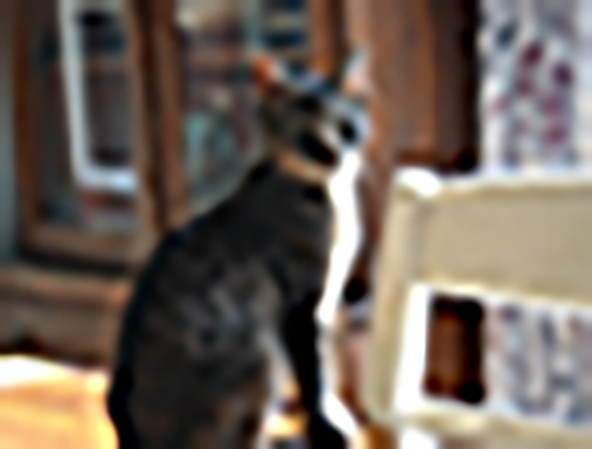
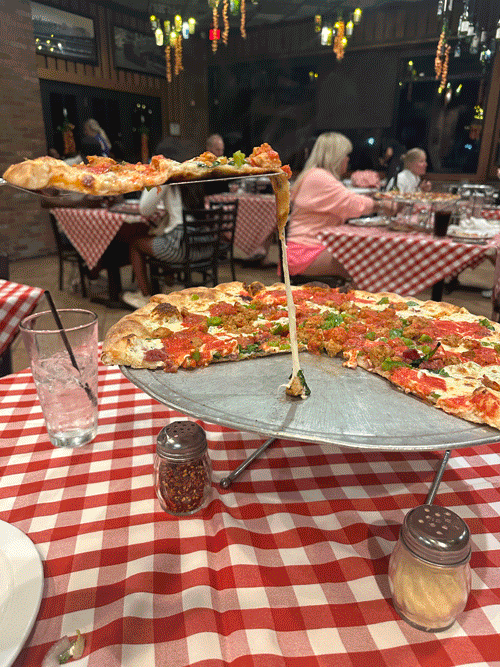

Distortion reveals structure. Low resolution exposes digital bones. When images break apart, they show how fragile clarity really is.
Compression flattens detail but strengthens emotion. Failure becomes aesthetic. Memory feels more honest when it is imperfect.

